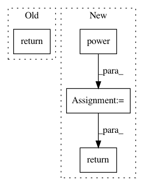

1ec4287799a1ccfc019f564f3ce0de468de6e313,ParamSklearn/implementations/ProjLogit.py,ProjLogit,predict_proba,#ProjLogit#Any#,74
Before Change
pred = np.dot(testx, self.w)
//print(pred)
p_res = proj_simplex(pred)
return p_res
def predict_log_proba(self, X):
if self.w == None:
return np.zeros(X.shape[0])
After Change
testx = np.hstack([np.ones((X.shape[0], 1)), X])
pred = np.dot(testx, self.w0)
for ws, w in zip(self.ws_all, self.w_all):
res = np.hstack([pred, np.power(pred, 2) / 2., np.power(pred, 3) / 6., np.power(pred, 4) / 24.])
p_res = proj_simplex(np.dot(res, ws))
pred = p_res + np.dot(testx, w)
return proj_simplex(pred)
def predict_log_proba(self, X):
if self.w == None:
return np.zeros(X.shape[0])
In pattern: SUPERPATTERN
Frequency: 3
Non-data size: 4
Instances
Project Name: automl/auto-sklearn
Commit Name: 1ec4287799a1ccfc019f564f3ce0de468de6e313
Time: 2015-04-09
Author: springj@informatik.uni-freiburg.de
File Name: ParamSklearn/implementations/ProjLogit.py
Class Name: ProjLogit
Method Name: predict_proba
Project Name: automl/auto-sklearn
Commit Name: 1ec4287799a1ccfc019f564f3ce0de468de6e313
Time: 2015-04-09
Author: springj@informatik.uni-freiburg.de
File Name: ParamSklearn/implementations/ProjLogit.py
Class Name: ProjLogit
Method Name: predict_proba
Project Name: deepchem/deepchem
Commit Name: c5f9a908910ab118c465de659a8a90c9d64aa708
Time: 2016-11-14
Author: flee2@stanford.edu
File Name: deepchem/trans/transformers.py
Class Name: PowerTransformer
Method Name: transform
Project Name: theislab/scanpy
Commit Name: 781857fc4e76a3662530ff755ea4e7cf649d366b
Time: 2018-03-22
Author: f.alex.wolf@gmx.de
File Name: scanpy/neighbors/__init__.py
Class Name: Neighbors
Method Name: transitions